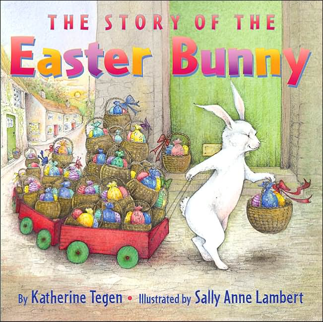

This book has been going strong at our house for a good two years. It’s our favorite! (mine too!) It’s a sweet story about how the Easter Bunny came to be.
Our Favorite Easter Book
March 25, 2013 by
Dying to Ombre
February 14, 2013 by
From the moment I laid eyes on this on the shelf of Wally World I have been DYING to try it. I haven”t come up with the courage yet, but I will. I have pretty much done every thing there is to do to your hair at home previously, so I have no idea why this scares me….but it does. Anyone tried it?? Anyone??

New Years Survey: Sarah
January 4, 2013 by

I seriously cannot believe it’s been almost a year of NO POSTING!!!! As the other girls mentioned, so, so, so much has happened in the past year, which, in turn made 2012 gone in the blink of an eye. When I last posted, I had an almost one year old, and now that sweet little baby is about to turn TWO and is in full-on independent toddler mode!
Here’s 2009, 2010, and 2011, and here’s a glimpse of what’s been going on in 2012:
- What did you do in 2012 that you’d never done before? We MOVED!!! Not very far, but into a new zip code, fabulous school district, and a gorgeous home that we have extra room to grow into.
- Did you keep your new year’s resolutions, and will you make more for next year? Yes and no on keeping my resolutions from 2012. I totally kicked booty in the workout department. I did start to slack off the last month of the year, but I will still call it a success! My other resolution was to blog more and I would say that was an OBVIOUS fail. I will/did make more resolutions this year, and as per year’s past, I’ll post them soon! 🙂
- Did anyone close to you give birth? Der gave birth to a beautiful baby girl! (I’m also expecting my very first niece or nephew in the next couple of weeks, but that’s 2013 isn’t it!?!?!?! Still, sooooo excited!)
- Did anyone close to you die? No, thank goodness.
- What countries did you visit? None, zippo, nada! We had a couple of mini vaca’s this year though, which was nice.
- What would you like to have in 2013 that you lacked in 2012? I probably need a new ride; although, I’m struggling with this. I mean, my car is paid for and my husband’s will be paid for this month. Do I REALLY want another car payment?
- What dates from 2012 will remain etched upon your memory, and why? January 31, 2012: We closed on our house after only being on the market for 6 days! February 29, 2012: We closed on our new home!!!!
- What was your biggest achievement of the year? Selling and buying homes was the biggest learning curve. I will also call my son’s transition to his mother’s day out/pre-school program a huge achievement too because it was HARD on this Momma…
- What was your biggest failure? I don’t think we had a failure, whew, lets hope it’s the same for 2013!
- Did you suffer illness or injury? No, thank goodness.
- What was the best thing you bought? Not to sound like a broken record, but our new house! 2nd best thing was the plantation shutters FOR said house! 🙂
- Whose behavior merited celebration? My son. He has become such a fun little boy. Hard headed for sure and he definitely gets in a LOT of trouble sometimes, but the rate at which he’s constantly learning new things makes me want to celebrate him every.single.day.
- Whose behavior made you appalled and depressed? This probably doesn’t need to be elaborated on…
- Where did most of your money go? (Broken record) Our house! We drained the bank for this bad boy, but it was so, so, so worth every cent.
- What did you get really excited about? The house, duh, but also hearing the news in May that my baby sister was going to have her own BABY!
- What song will always remind you of 2012? “I Remember When” by Kristen Kelly. Was introduced to her music by a high school friend, who just so happens to be KK’s best friend! KK released her first Nashville album this year and she’s great…should deff check her out!
- Compared to this time last year, are you: a)happier or sadder?happier b)thinner or fatter? thinner c)richer or poorer? poorer
- What do you wish you’d done more of? Stayed at home. We are on the road at least 2 out of the 4 weekends a month and I am SOOOOOO OVER IT!
- What do you wish you’d done less of? Work, but who likes to work!?!?!
- How did you spend Christmas? Like 2011, we travled all over the state of TX again…
- Did you fall in love in 2012? Keep falling more and more in love with my little family!
- What was your favorite TV program? Parenthood, the Good Wife, Nashville, Scandle, and ALL stupid/ridic reality TV programming. (teen mom, real housewives, etc.)
- Do you hate anyone now that you didn’t hate this time last year?No.
- What was the best book you read? 50 Shades of Grey. I avoided this book for a LONG time because I thought it would be too much for me, but it’s seriously an amazing series and I am officially obsessed with Christian Grey and Anastasia Steele!
- What was your greatest musical discovery? Kristen Kelly
- What did you want and get? A new home!
- What did you want and not get? To have my house completely organized. I have some HIGHLY questionable closets.
- What was your favorite film of this year? I’m agreeing w/ AK. Breaking Dawn part 2. I’m pretty sure this was one of the only movies I watched this year and it was GREAT! Lawless was also pretty great.
- What did you do on your birthday, and how old were you? I turned the big 2-9 and spent a fab day w/ the girls shopping and drinking at the Round Top antique/craft fair!
- What one thing would have made your year immeasurably more satisfying? Less stressing about the little things. Everything really does work itself out…
- How would you describe your personal fashion concept in 2012? Comfort and easy! I’ve been trying to stay out of sweatpants/work out shorts, but working from home makes it REALLY hard to get dressed. However, I’m hoping to do a better job in 2013…hmmmm, resolution maybe?
- What kept you sane? My husband and my Mom. I had several meltdowns with C going to school and she was always there to reassure me that I made the right decision.
- Who was the best new person you met? Probably our new neighbors! They have been great and really made our new neighborhood feel like home.
- Tell us a valuable life lesson you learned in 2012. Don’t sweat the small stuff.
- Quote a song lyric that sums up your year. “On the pontoon Makin’ waves and catchin’ rays up on the roof Jumpin’ out the back, don’t act like you don’t want to Party in slow motion Out here in the open Mmmmmmm…motorboatin’ “ ~ Little Big Town (I heard this song umpteenmillion times this summer…)

New Year’s Survey: AK
January 2, 2013 by
Sooooo, hi? Remember us? Anybody still out there? Yeah, so we unintentionally took like a little break. A little break that lasted a year. Sorry? We thought the New Year’s Survey would be a great way to sorta explain things and get us back on track with being on the interwebs again. We don’t promise as many posts as we once had, but we promise more than we did in 2012. Deal?
- What did you do in 2012 that you’d never done before? I went back and re-read last year’s survey and this is sorta laughable at this point. So much has happened. Please see #7.
- Did you keep your new year’s resolutions, and will you make more for next year? HA!!!! OMG, so I just went back and re-read my resolutions from last year: Stay in shape, wear more red nail polish, read more books. UTTER FAIL! I wouldn’t say I’m out of shape, I just didn’t get to exercise as much as I would have liked this year. Nail polish? On what nails? The nails I bit off? Read more books…I can’t even count an issue of InStyle magazine here… Does twitter count?
- Did anyone close to you give birth? Der gave birth to a beautiful baby girl!
- Did anyone close to you die? No, thank goodness.
- What countries did you visit? None, and honestly we didn’t get any sort of vacation at all this year. Even date nights were few and far between.
- What would you like to have in 2013 that you lacked in 2012? Less hospital stays. 5-6 hospital stays with the little guy this year, one of which was 8 days. Less of those, definitely less of those.
- What dates from 2012 will remain etched upon your memory, and why? February 9, 2012. The day we found out our 9 month old had hemophilia. We have no history of hemophilia in our family at all, so this was an utter shock. For those of you not familiar with hemophilia, it’s a bleeding disorder. Our little guy developed some rather large bruises that we couldn’t for the life of us remember how he might have gotten which led to an ER visit which resulted in a joint bleed. The doctors initially thought he had severe nursemaid’s elbow for which they put a cast on his arm for two weeks but was really a joint bleed. We found that out on February 9th when a hematologist we’d seen called me while I was picking up my oldest from preschool that we were dealing with hemophilia and to not pass go and collect $100 but to come immediately to the hospital so they could begin treating, not for a dislocated elbow, but in fact a joint bleed. And so our life changed forever.
- What was your biggest achievement of the year? Learning how to give my son the medicine he needs, along side my husband, without help from our home healthcare nurse. We are by no means medically inclined, I mean we come from software/web programming backgrounds. If you had told us we’d be learning sterile procedure and sticking our son with a needle every single day I’d have been mortified. It’s very empowering to know you can take immediate action with a hemophilia kid if/when you need to.
- What was your biggest failure? I was almost going to say we’ve had no failures this year, only learning experiences, but I need to document the 10lbs I gained since finding out our son’s diagnosis so it pushes me to lose it.
- Did you suffer illness or injury? Not me personally, but in addition to my son being diagnosed we’ve also had a few family illnesses that have popped up this year. We’ve been sort of a mess this year.
- What was the best thing you bought? Our second iPad was a lifesaver on that 8 day hospital stay, as was the two seasons of Bubble Guppies purchased on said iPad. Those Bubble Guppies are the gift that keep on giving. What time is it? It’s time for lunch! Whoops, sorry I got sidetracked.
- Whose behavior merited celebration? My family. My mom would come to the hospital with me and the little one and my husband was alternating between working and keeping up with our 4 year old’s schedule. My dad would alternate between all of us, shuttling things here and there. My in-laws helping out where we needed. And our friends keeping us sane and bringing us dinners or taking our older kiddo when needed.
- Whose behavior made you appalled and depressed? I’m going to go ahead and just say that one nurse that tried SEVEN times to find a vein on my child in the ER. I will never forget.
- Where did most of your money go? Medical expenses, a new roof, and a new A/C. You know those really fun things! All in one year! Winning!
- What did you get really excited about? Any and all nights that both children slept through the whole night–sleep is nice.
- What song will always remind you of 2012? We Are Never Ever Getting Back Together by Taylor Swift. Our 4 yr old LOVES Taylor Swift and learned every single word to that song and damn if I didn’t become a fan of hers after that. I mean that’s the problem you know? When your kid is singing something word for word and says he wants to meet Taylor Swift and have her go eat sushi with us on Fridays or come to his birthday party or go look at Christmas lights with us….after the year we’ve had….I say buy the boy all the Taylor Swift albums he can listen to! Shhhh don’t tell him he is going to see her in concert in May of this year 🙂
- Compared to this time last year, are you: a)happier or sadder? sadder b)thinner or fatter? fatter c)richer or poorer? poorer
- What do you wish you’d done more of? Too many things to say here…exercise? date nights? gone to the movies? read books? There’s a ton of stuff that gladly took a backseat to learning a new normal. There’s always 2013 to do more right?
- What do you wish you’d done less of? STRESS: stress eat, stress bite my nails. Have to SEE DOCTORS. Cry.
- How did you spend Christmas? We had a surprisingly fantastic, free from medical intervention, surrounded by family Christmas. It was perfect and we are very blessed.
- Did you fall in love in 2012? I’m the type of person that watches a show while I work out on the treadmill..preferably a tv series of some sort. So with that said, I re-fell in love with the Alias series. And let me tell you when Jennifer Garner starts running in those chase scenes, I apparently think that I’m Sydney Bristow on my treadmill and start running VERY quickly. This can be good and bad.
- What was your favorite TV program? Parenthood and The Good Wife. Those are the two shows that I watch live/real time, not tivo’d.
- Do you hate anyone now that you didn’t hate this time last year? No.
- What was the best book you read? Book? What are books?
- What was your greatest musical discovery? “Long, Long Time Ago”-Bubble Guppies
- What did you want and get? A new iPhone, mine was dying a slow death….thank you upgrade!!! I also got a couple of kiddos that love the pool and love swim lessons which made the summer so much more fun.
- What did you want and not get? To keep my fantastic weight loss from last year off.
- What was your favorite film of this year? I can’t at this point say Breaking Dawn 2 can I, that would be embarassing? Ok, then I’ll go with Life of Pi, that was pretty cool.
- What did you do on your birthday, and how old were you? I think I did dinner with the girls? I turned 37. I’m officially old. Like old with wrinkles, old.
- What one thing would have made your year immeasurably more satisfying? less stress, more smiles and less tears, and maybe more episodes of Parenthood and The Good Wife.
- How would you describe your personal fashion concept in 2012? Plaid shirts and jeans.
- What kept you sane? My husband, my family, my friends, doctors and nurses.
- Who was the best new person you met? We’ve met a lot of good people this year that have taught us that everything is going to be ok with our little guy.
- Tell us a valuable life lesson you learned in 2012. God doesn’t give you more than you can handle.
- Quote a song lyric that sums up your year. Sometimes I’m afraid and I don’t feel that tough, But I’ll stand back up ~ Sugarland
Photo by Momma’s Gonna SNAP Photography
I hope that helps everyone partially understand why we haven’t been around. We’re coming back, I promise.
At West End
January 19, 2012 by

I’m a fan of At West End. Whenever their catalog comes in the mail it’s the one that I look at immediately. I love all the quirky fun stuff they have to offer. These are some of my current favs.
- set of three felt neck ties \ striped-These also come in solids and bow ties, very very cute!!
- terra cotta planter-I want the pig and I would take the plant that is in it as well.
- recycled round wine glasses \ set of six-I am a huge fan of chunky glassware and these would be perfect to add to my collection.
- giraffe paper towel holder-I would definitely put this in my guest bathroom, very cute.
- giant ceramic shell vase-SO FUN for a wine chiller at a party, this is right up my alley.
Denim and Diamonds: Centerpiece Options
January 13, 2012 by

We received a comment on our Facebook page recently asking about some inexpensive options for a “Denim and Diamonds” themed party, and here’s what we came up with!
- Mason jars w/ tea lights: from http://emmalinebride.com/handmade-wedding/mason-jar-centerpieces-floating-candles/. We would replace those clear marbles with diamondy things.
- Baby’s breath in galvanized tubs (large or small): from theknot.com. After all, baby’s breath is CHEAP!
- Flowers in vintage cans: from http://peacockfeatherevents.blogspot.com/2009/10/wedding-wild-flowers.html. You could also just take regular cans and cover the cans with either scrapbook or brown paper, which might be easier to find if you don’t have vintage cans on hand.
- Flowers, curly willow, and raffia in clear vases: from http://jenelisebeth.blogspot.com/2009/07/etsy-martha-stewart-handmade-weddings.html. We would replace the yellow with something that matches the colors of the party.
- Mason jars, twine, and flowers: from http://wedding.allwomenstalk.com/5-rustic-wedding-centerpiece-ideas/.
Hope this helps…keep us posted on what you end up using!
New Year’s Resolutions: AK 2012
January 1, 2012 by
Last year I made resolutions, which truly hasn’t been my thing most of my life. I made resolutions the year before and didn’t keep a lot of them, but last year…well, last year I kept them and I don’t think it was a conscious thing. I think I made a list that was actually feasible. I was downright surprised when I realized while doing my survey this year that I had kept all my resolutions. So I’m going to attempt the same thing this year, let’s see if this works…
- STAY in shape. Don’t gain the weight back. I totally think this is do-able. I could stand to lose maybe 5-7 more pounds, but I’m not going to push my luck. If I end this year the way I started it, weight wise, I’ll be happy.
- Wear more RED nail polish. You think this is easy…however, it’s really not. See…this year has been nutso, crazy busy and I didn’t get many manicures. If I don’t get manicures, I bite my nails. It’s as simple as that. I have no other solution for the nail biting besides manicures, it’s the only thing that has worked my whole life. So if I’m biting my nails then my nails aren’t long enough for a color. You may ask, what is long enough? I’m talking beyond the nubs people.
- READ! I love reading good books. I need to make the time. Somehow. Last year’s reading status was pathetic.
So there you have it! I think I can make that happen. I’m going easy on myself this year because why not? I owe it to myself.
New Year’s Survery: Der Edition
December 30, 2011 by
Hello blogworld. It’s been a while and I apologize for that. It’s been an interesting, super duper busy, crazy, fabulous year and I think I need to get back on the Tipsy track so all y’all can know about it! And I’m going to start with my New Year’s survey!
1. What did you do in 2011 that you’d never done before?
I went back to school. Which sucked and was awesome at the same time. Sucked bc it was school and juggling that with a baby… but was awesome feeling to know I could get back in the swing of those things again and actually pass:)
I also started my own photography biz. It’s really taken off and I couldn’t be more proud of myself. It’s really awesome to be doing something that you love and getting paid for it.
2. Did you keep your new year’s resolutions, and will you make more for next year?
I didn’t have anything really specific last year. Going to school was a big one and I did that.
3. Did anyone close to you give birth?
So so many peeps: AK, Sarah… many, many friends. 2011 was a year of babies.
4. Did anyone close to you die?
No, thankfully we were able to skip out on any deaths this year.
5. What countries did you visit?
Um, none. Same answer as last year. We didn’t do any traveling really at all this year, but I certainly hope to change that and take AJ on his first real family vacay in 2012!
6. What would you like to have in 2012 that you didn’t have in 2011?
I’m venturing to say maybe pregnancy #2….still reeling the hubs in on that one though:)
7. What dates from 2010 will be etched upon your memory, and why?
October 7th… my baby turned one. I’m so in love with him and with being a mother. I never knew something could feel so right, but it does.
8. What was your biggest achievement of this year?
Putting myself out there with the photog biz. It was a really big step for me to think that someone would actually want to pay me to take their photo. I’m starting to think maybe all my friends and fam weren’t crazy when they pushed me to do this.
9. What was your biggest failure?
I would have to say letting stress get to me. I think sometimes I need to focus more on the big picture and not on the small things.
10. Did you suffer illness or injury?
No, I didnt have too many illnesses or issues, but poor baby AJ was an ear infected fool for a few months there.
11. What was the best thing you bought?
My iphone 4 upgrade. I couldn’t live without it. My new camera equipment.
12. Whose behavior merited celebration?
My husband… he has his moments of bitchiness of course, but he works so so hard for our family and provides us with everything we want and need. I know I am so very lucky to have someone who cares about my happiness the way he does.
13. Whose behavior made you appalled and depressed?
High road once again.
14. Where did most your money go?
Holy crap, totally baby. And all his crap.
15. What did you get really, really, really excited about?
Seeing AJ pass all his milestones: sitting, walking, talking… he’s grown to have the most amazing personality and he just gets cuter by the minute.
16. What song will always remind you of 2012?
Eli Young Band “Crazy Girl”… my hubs is a die hard fan and he also plays guitar. I prob heard his rendition of this song 87,001 times.
17. Compared to this time last year, are you: a) happier or sadder? b) thinner or fatter? c) richer or poorer?
Infinitely Happier….I’m doing something I love, have a wonderful family
Thinner.. .Finally kicked all that pesky baby weight and then some… somehow things still don’t look the same, but I’ll take it:)
A Little Richer… Hubs got a well deserved promo, my biz is taking off… I’m pretty proud to say I think we are doing ok!
18. What do you wish you’d done more of?
Taken more photos of AJ as a tiny baby. I miss that little lump and I didn’t go total picture crazy until he was maybe 6 months old
19. What do you wish you’d done less of?
Saying NO. I feel like that’s AJ’s new name. But I think that just comes with the mischievous boy territory.
20. How did you spend Christmas?
With family at several different houses. The hubs even surprised me and AJ by getting off early on Christmas Eve to show up at the family celebration for my side of the family.
21. Did you fall in love with 2011?
Oh my goodness. Yes. I love my family and it was a great year with the 3 of us.
22. What was your favorite TV program?
Modern Family, Private Practice and dont laugh… Teen Mom.
23. Do you hate anyone now that you didn’t hate this time last year?
I don’t hate anyone. Ever. I just don’t really “get” some people, but I would never say hate.
24. What was the best book you read?
Psssh, read. Nope. None.
25. What was your greatest musical discovery?
I always like a good country song and a few of those new ones got me.
26. What did you want and get?
To stay home with my son, to start a business
27. What did you want and not get?
Nada. I’m pretty content.
28. What was your favorite film of 2011?
I am so behind on movies. SO BEHIND. I promise to catch up in 2012.
29. What did you do on your birthday, and how old were you?
I turned 27 and I went out out for the first time post baby. It was a really good time.
30. What one thing would have made your year immeasurably more satisfying?
Less sweating the small stuff. Otherwise it was a pretty stellar year.
31. How would you describe your personal fashion concept of 2011?
Casual. I lived in rolled jeans and fitted tees, flops and flats and tiny jewelry unable to be ripped off by an infant. It’s really interesting to see how much motherhood really has changed my style. I’m much more casual and sporty than I used to be. It’s about comfort and function people… ok, and it has to be cute too:)
32. What kept you sane?
My husband. My mom. Daily phone convos and IM chats with my best gals. Sometimes you just need to vent.
33. What political issue stirred you the most?
I don’t do politics.
34. Who did you miss?
I think maybe a little bit of adult interaction. I love being at home with my son, but a little adult convo is much appreciated.
35. Who was the best new person you met?
All these babies. I love babies.
36. Tell us a valuable life lesson you learned in 2010.
Sometimes life takes you in directions you never imagined. And that’s a good thing.
37. Quote a song lyric that sums up your year.
“Your little hand’s wrapped around my finger
And it’s so quiet in the world tonight
Your little eyelids flutter cause you’re dreaming
So I tuck you in, turn on your favorite night light
To you everything’s funny, you got nothing to regret
I’d give all I have, honey
If you could stay like that”
-Taylor Swift


New Year’s Survey: AK
December 30, 2011 by
It’s that time of year again! Let’s put the year in review! Here’s 2009 and 2010.
- What did you do in 2011 that you’d never done before?Lots of firsts this year…I learned to juggle two kids. We had a brand new baby boy in May and our first born turned 3 in October. And for those of you with multiple kids, you know, it’s just a learn as you go thing…will you give each of them enough attention etc, etc. We seem to be doing alright.
My husband and I had also started our own business about 2 years ago, but he also worked a 9-5 job as well. This was the year that our own business took over and he no longer works the 9-5. Fingers crossed!
Also, we entered the land of preschool! Very weird to take your child to a place and DROP THEM OFF and LEAVE and it’s not like my mom’s house or something…that took some getting used to!
- Did you keep your new year’s resolutions, and will you make more for next year?
It looks like these were mine from last year:Get in shape after having the baby-I DEFINITELY did this and am very proud of myself. Both my husband and myself workout regularly, eat better…all the hard stuff that you do to lose weight. We both lost about 25-30lbs.Take More Pictures, specifically so the new baby has baby pictures-YES! I did take a lot of pictures of the new addition to our family…even though they may have just been iPhone pics. Note to self, use the better camera more often.
Get craftier-YES! I had help but I did make the baby clothes quilt that I had in sight. It took most of the year and I learned to sew by doing it! Once I had the sewing down I managed to make some of the other Tipsy gals clutch purses for Christmas and some fleece hats for the kiddos.
Keep organized along the way-Yes and No. I organized little things along the way like junk drawers and butler’s pantry and stuff like that but I also had my closet get completely unmanageable and I had to do a complete overhaul.
I think I will definitely make a couple for next year and see how that goes, maybe I’m on a roll.
- Did anyone close to you give birth?Me! And Sarah! And my sister-in-law!
- Did anyone close to you die?We had to put our little Chihuahua, Weezie, down this year. She’d been with me a while—pre-kids and pre-husband. She was feisty that one. The vet told us that she’s definitely one he will remember. I choose to believe that was because she challenged him. ha!
- What countries did you visit?None. But we did make a trip to Oklahoma to meet Danielle in person! We had a great time, thanks Danielle!!
- What would you like to have in 2012 that you lacked in 2011?Oh I would so love to move into a new house, we’ve completely outgrown ours. We’ll see what the future holds.
- What dates from 2011 will remain etched upon your memory, and why?Having another baby…for obvious reasons.
- What was your biggest achievement of the year?Probably losing the weight, it was hard, but it was worth it and I want to be healthy for my family.
- What was your biggest failure?This question depresses me. I mean we all do things/say things that we look back on and think of it as being a failure, including me…especially me because I’m sort of a perfectionist. But you live and learn right? Everything is a lesson.
- Did you suffer illness or injury?DUDE. So, since my 3 year old started preschool in August it’s like this whole house has been sick umpteen times.
- What was the best thing you bought?We got an iPad this year and it has hands down been the best purchase. Officially it’s my husband’s, but my son uses it a TON and I use it EVERY now and then…I’m thinking I kinda need one for myself.
- Whose behavior merited celebration?My first born…we threw a lot of things at him this year including a new brother, a new big boy bed, preschool, and potty training. I think dude deserves a party.
- Whose behavior made you appalled and depressed?People surprise you, take you off guard…but again, live and learn right?
- Where did most of your money go?Health insurance and related baby birthing expenses.
- What did you get really excited about?Introducing a new little guy into the world and seeing how nobody can make him smile quicker or bigger than his big brother.
- What song will always remind you of 2011? Moves Like Jagger, Hey Mama, and anything by Pistol Annies
- Compared to this time last year, are you: a)happier or sadder? Hmmm I’m not sure? More stressed?
b)thinner or fatter? THINNER! Yay! And not just because I had a baby, like thinner than before I got preggers. Let’s hope I can stay on this train…
c)richer or poorer? The same? Or would that mean poorer because we’ve added a kid into the mix?
- What do you wish you’d done more of?This is going to sound super lame, but reading…I hardly read anything this year and that sucks. Also, movie-going. I do miss my pre-kids weekly trips to the movie theater.
- What do you wish you’d done less of? Worry. Stress about things.
- How did you spend Christmas?Christmas Eve we combined my family and my husband’s and did dinner at our house. On the menu that night: beef enchiladas (made by me), beans (made by me), cilantro rice (made by my husband), skinny margs (made by my husband). Christmas Day we did our gifts/Santa in the morning and then went to my parent’s house for our traditional breakfast and presents, then home for the kids to nap and then went back around 4 for dinner and brought my husband’s mom along with us. It was a great day.
- Did you fall in love in 2011?I always answer this one very cheesily…yes with my family! Our new little one is just super cute and chill and our oldest just gets cuter and smarter and more fascinating every single day. And I’m very proud of my husband on the business front, he’s doing a super great job and I just couldn’t have asked for a better guy.
- What was your favorite TV program?I for sure continue to love The Good Wife. I definitely love Parenthood. And I’m totally addicted to watching Greek on Netflix streaming.
- Do you hate anyone now that you didn’t hate this time last year?It’s a waste of time to spend energy hating.
- What was the best book you read?Like I said, I didn’t get to too many books this year. I did finish Black Heels to Tractor Wheels and Two Kisses for Maddy. And then I started a few others but haven’t finished them: All That is Bitter & Sweet, Waiting for Birdy, Seriously…I’m Kidding, and Extremely Loud & Incredibly Close. I’ll get to them, hopefully this year.
- What was your greatest musical discovery?I continue to love Miranda Lambert and definitely love her new girl group Pistol Annies. And Martina McBride’s newest album is definitely different for her and I love the change, I’m back to being a fan. But in terms of greatest musical discovery? That has to be my 3 year old who has taken to singing and dancing and dj’ing for us nonstop lately. It has got to be the cutest thing I’ve ever seen…especially when he picks a song from my iTunes list and says, “Mama, I think you are gonna like this one…”
- What did you want and get?A healthy, happy baby boy.
- What did you want and not get?Nothing else matters…everything comes in its own time.
- What was your favorite film of this year?Without a doubt I loved Crazy, Stupid Love. And it wouldn’t be right if I didn’t throw in that I am still on the Twilight train and loved Breaking Dawn Part 1.
- What did you do on your birthday, and how old were you?Blah! I turned 36 and I had a dentist appointment. Though the next weekend my husband sent me on an all day spa day. It was fabulous.
- What one thing would have made your year immeasurably more satisfying?Hmmm, probably more sleep, less stress and worry.
- How would you describe your personal fashion concept in 2011?Jeggings and Skinny jeans came into the mix! I’m late to the game…
- What kept you sane?I have no idea. Maybe deep breaths and taking things day by day?
- Who was the best new person you met?Well of course our new little guy. It’s amazing how in some ways he’s so different from our first and yet very, very similar.
- Tell us a valuable life lesson you learned in 2011.“It’s important to remember that people are always doing the best they can, including you.”
- Quote a song lyric that sums up your year.Like I said earlier, we rounded the year out with a new baby and going out on our own business-wise, so I think this pretty much sums that up…
These Are the Days by Sugarland
“…And we wake up wondering what might happen next
Yeah, sometimes it feels like we won’t make it through
But the hard times pass like the good ones do
Baby, wrap your fingers and hold on tight
I’ll be right here beside you tonight…
…We’re making moments we won’t forget
We fill in ones that haven’t happened yet…”
Last year I took an idea of Whoorl’s to showcase a year of iPhone pics, so I’m going to continue with that and show you pics I took with my phone along with instagrams. It’s a little longer this year, but hey, I love my family! I hope you enjoy it! And I hope everyone has a very Happy, Healthy and Prosperous New Year!
Christmas Stocking Update
December 12, 2011 by

Remember when I told y’all I was gonna make stockings this year? Well I did some semi-homemade ones…I had every intention of going and buying the felt to actually sew the stockings but when I got to my fabric store lo and behold they had basic red felt stockings that I could use as a base to start with. So I bought 4 of those puppies and some rick rack and felt squares. I had purchased two ornaments (an owl and a hedgehog) to put on the pockets of the boys’ stockings the week before. So I got to work and ended up just hot glueing the majority of the project. My plan for next year is to actually embroider their names on by hand (inspired by this), but for now I’m just going to use the initials.


Recent Comments